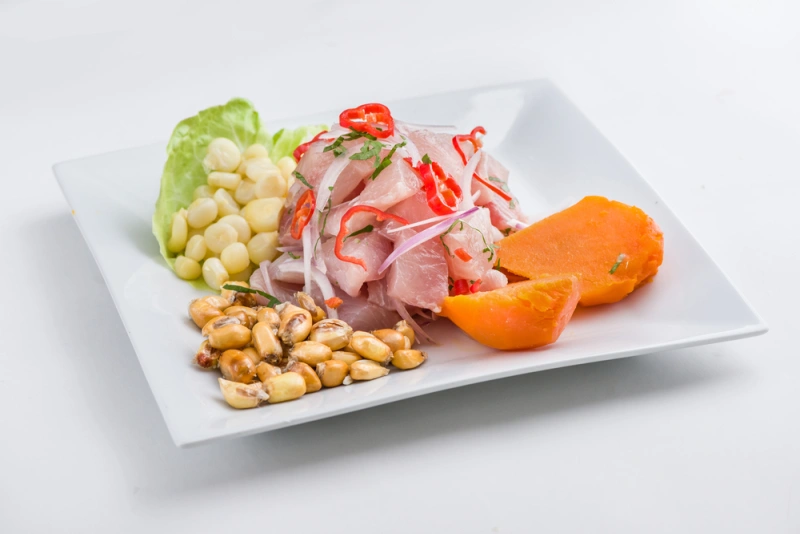
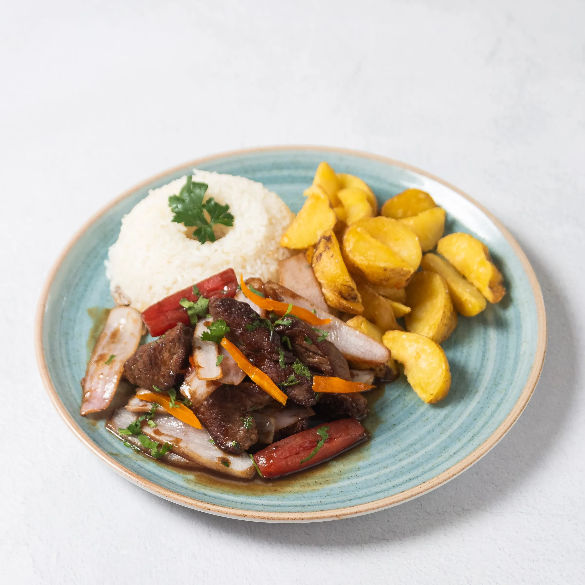

Ceviche clásico
Pescado fresco, limón, ají limo, camote y choclo.
Gastronomía peruana con identidad
Recetas tradicionales, ingredientes frescos y una atención pensada para compartir en familia. La propuesta conserva la esencia original del proyecto y ordena sus componentes bajo una misma identidad visual.

Una selección breve de preparaciones representativas de la cocina peruana.

Pescado fresco, limón, ají limo, camote y choclo.

Lomo fino al wok con cebolla, tomate, papas y arroz.
Papa amarilla, ají, limón, pollo y palta.